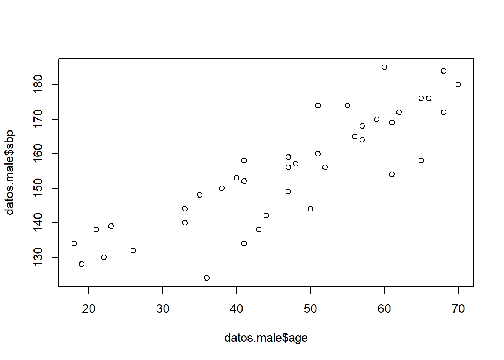
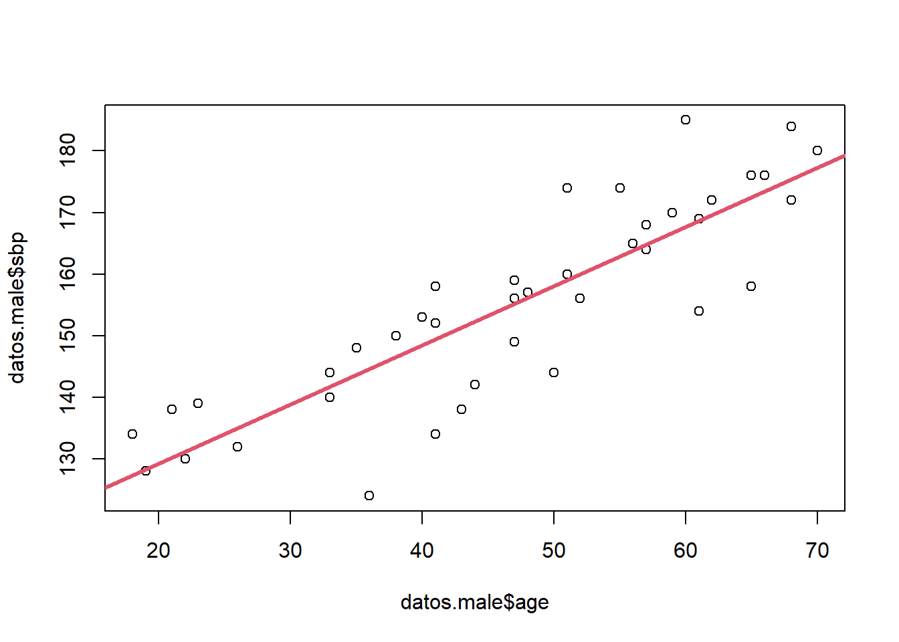
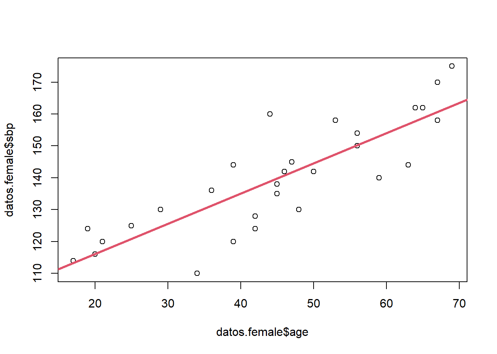
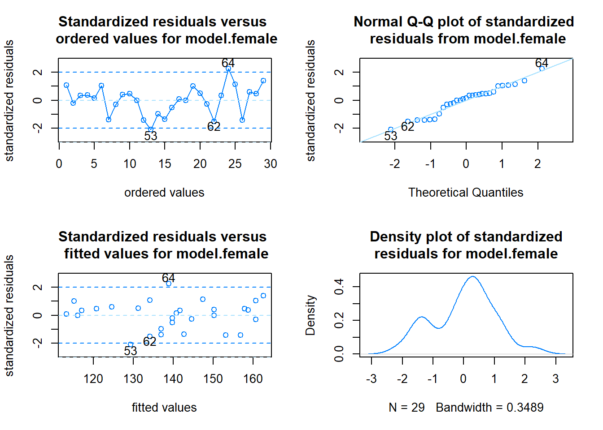

knitr::opts_chunk$set(echo = TRUE)Bioestadística. Máster Universitario en Investigación en Ciencias de la Salud
Práctica 5 - Regresión
- Emplea el fichero
bloodpress1.txtpara ajustar un modelo de regresión lineal que permita estimar la presión sistólica en hombres según la edad.
library(PASWR2)Warning: package 'PASWR2' was built under R version 4.2.3Loading required package: latticeLoading required package: ggplot2Warning: package 'ggplot2' was built under R version 4.2.3datos<-read.table("bloodpres1.txt",header=TRUE)
datos.male<-datos[datos$sex=="M",]
plot(datos.male$age,datos.male$sbp)
model.male<-lm(sbp~age,data=datos.male) #### Ajustamos la recta• Proporciona una explicación para los coeficientes
summary(model.male)
Call:
lm(formula = sbp ~ age, data = datos.male)
Residuals:
Min 1Q Median 3Q Max
-20.647 -3.128 1.681 3.912 17.280
Coefficients:
Estimate Std. Error t value Pr(>|t|)
(Intercept) 110.0385 4.4892 24.51 < 2e-16 ***
age 0.9614 0.0913 10.53 7.98e-13 ***
---
Signif. codes: 0 '***' 0.001 '**' 0.01 '*' 0.05 '.' 0.1 ' ' 1
Residual standard error: 8.479 on 38 degrees of freedom
Multiple R-squared: 0.7447, Adjusted R-squared: 0.738
F-statistic: 110.9 on 1 and 38 DF, p-value: 7.985e-13• Representa gráficamente la línea ajustada
plot(datos.male$age,datos.male$sbp)
abline(model.male,col=2,lwd=3)
checking.plots(model.male)r<-rstandard(model.male)
shapiro.test(r)
Shapiro-Wilk normality test
data: r
W = 0.93985, p-value = 0.03418• Obtén la predicción para cinco hombres de 20, 29, 46, 58 y 65 años de edad
predicitons<-predict(model.male,newdata=data.frame(age=c(20,29,46,58,65)),se.fit=TRUE,interval="prediction")
predicitons$fit
fit lwr upr
1 129.2656 111.1885 147.3426
2 137.9178 120.2262 155.6093
3 154.2607 136.8814 171.6401
4 165.7970 148.2983 183.2956
5 172.5264 154.8297 190.2232
$se.fit
1 2 3 4 5
2.800134 2.115626 1.343340 1.679256 2.126238
$df
[1] 38
$residual.scale
[1] 8.479221- Emplea el fichero
bloodpress1.txtpara ajustar un modelo de regresión lineal que permita estimar la presión sistólica en mujeres según la edad.
datos.female<-datos[datos$sex=="F",]
plot(datos.female$age,datos.female$sbp)
model.female<-lm(sbp~age,data=datos.female) #### Ajustamos la recta• Proporciona una explicación para los coeficientes
summary(model.female)
Call:
lm(formula = sbp ~ age, data = datos.female)
Residuals:
Min 1Q Median 3Q Max
-19.354 -4.797 1.254 4.747 21.153
Coefficients:
Estimate Std. Error t value Pr(>|t|)
(Intercept) 97.0771 5.5276 17.562 2.67e-16 ***
age 0.9493 0.1161 8.174 8.88e-09 ***
---
Signif. codes: 0 '***' 0.001 '**' 0.01 '*' 0.05 '.' 0.1 ' ' 1
Residual standard error: 9.563 on 27 degrees of freedom
Multiple R-squared: 0.7122, Adjusted R-squared: 0.7015
F-statistic: 66.81 on 1 and 27 DF, p-value: 8.876e-09• Representa gráficamente la línea ajustada
plot(datos.female$age,datos.female$sbp)
abline(model.female,col=2,lwd=3)
checking.plots(model.female)
r<-rstandard(model.female)
shapiro.test(r)
Shapiro-Wilk normality test
data: r
W = 0.96328, p-value = 0.3948• Obtén la predicción para cinco mujeres de 23, 26, 32, 55 y 62 años de edad
predicitons<-predict(model.female,newdata=data.frame(age=c(23,26,32,55,62)),se.fit=TRUE,interval="prediction")
predicitons$fit
fit lwr upr
1 118.9115 98.2724 139.5506
2 121.7595 101.2909 142.2281
3 127.4554 107.2561 147.6547
4 149.2898 129.1922 169.3874
5 155.9351 135.5735 176.2966
$se.fit
1 2 3 4 5
3.118275 2.838810 2.336169 2.117572 2.649644
$df
[1] 27
$residual.scale
[1] 9.56333